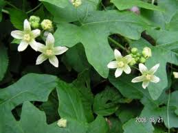

Brione dioique

Brione dioique (Bryonia dioica Jacq. de la famille des Curcubitacées)
Toxique à très toxique.
Partie toxique pour les chats en général et le Korat en particulier :
Baies et rhizomes (partie souterraine et parfois subaquatique de la tige.
Symptômes du processus pathologique :
Anorexie et vomissements, coliques sévères, diarrhée avec selles aqueuses, augmentation de la diurèse. L'évolution vers la paralysie, le coma puis la mort est possible.
Origine de la toxicité (principe actif) :
Plusieurs glucosides dont la bryosine.